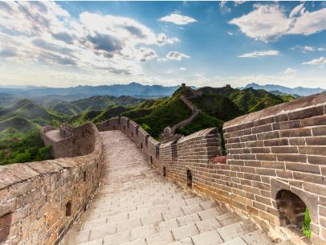

7 Wonders of World
The Grate Wall of China
Great Wall of China, near Beijing:
Great might be an understatement. One of the world’s largest building-construction projects, the Great Wall of China is widely thought to be about 5,500 miles (8,850 km) long; a disputed Chinese study, however, claims the length is 13,170 miles (21,200 km). Work began in the 7th century BCE and continued for two millennia.

Although called a “wall,” the structure actually features two parallel walls for lengthy stretches. In addition, watchtowers and barracks dot the bulwark. One not-so-great thing about the wall, however, was its effectiveness. Although it was built to prevent invasions and raids, the wall largely failed to provide actual security. Instead, scholars have noted that it served more as “political propaganda.”